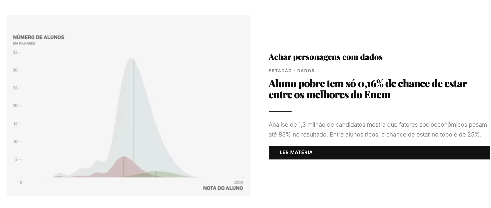
Estadão · Dados
Achar personagens com dados
Aluno pobre tem só 0,16% de chance de estar entre os melhores do Enem. A análise transforma uma base nacional em personagens e desigualdade concreta.
LER MATÉRIADescobrir padrões, exceções e casos que não aparecem em releases.
Testar promessas, falas e números com bases independentes.
Reduzir dependência de assessorias e de declarações prontas.
Usar bases grandes para chegar a pessoas e lugares concretos.

Aluno pobre tem só 0,16% de chance de estar entre os melhores do Enem. A análise transforma uma base nacional em personagens e desigualdade concreta.
LER MATÉRIA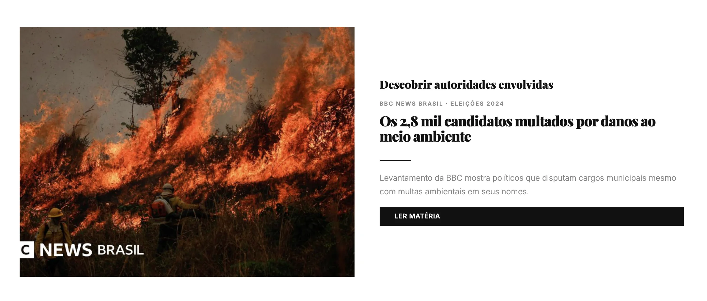
Os 2,8 mil candidatos multados por danos ao meio ambiente. Cruzamento de candidaturas com multas ambientais.
LER MATÉRIA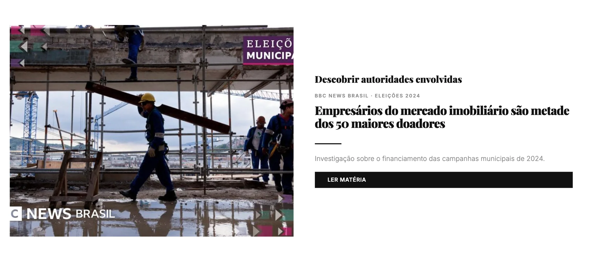
Empresários do mercado imobiliário são metade dos 50 maiores doadores. Doações eleitorais viram mapa de interesses e redes econômicas.
LER MATÉRIA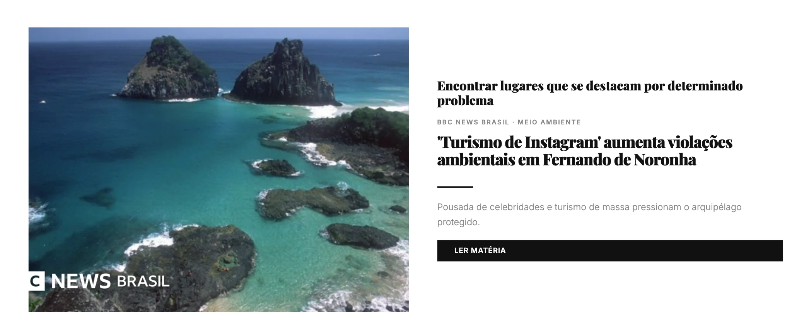
“Turismo de Instagram” aumenta violações ambientais em Fernando de Noronha. Dados ajudam a localizar onde o problema se concentra.
LER MATÉRIA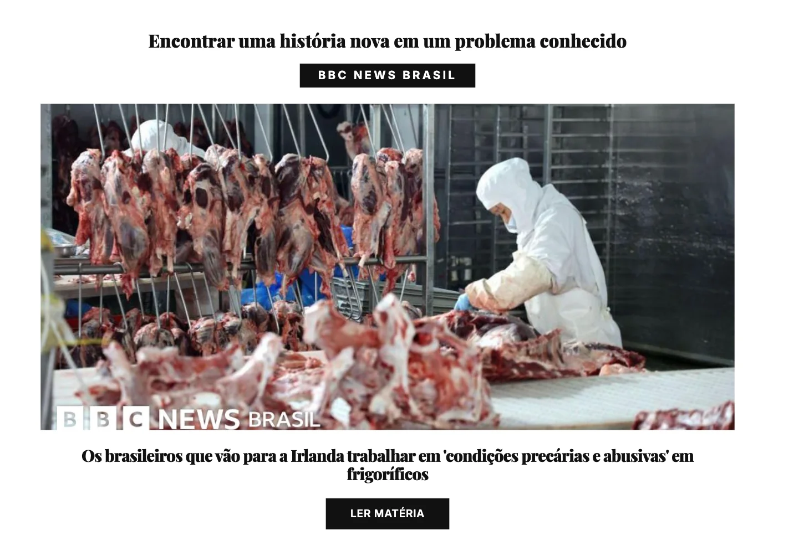
Os brasileiros que vão para a Irlanda trabalhar em “condições precárias e abusivas” em frigoríficos.
LER MATÉRIACandidatos que usam propostas idênticas em planos de governo. Documentos também são dados: textos podem ser comparados em escala.
LER MATÉRIA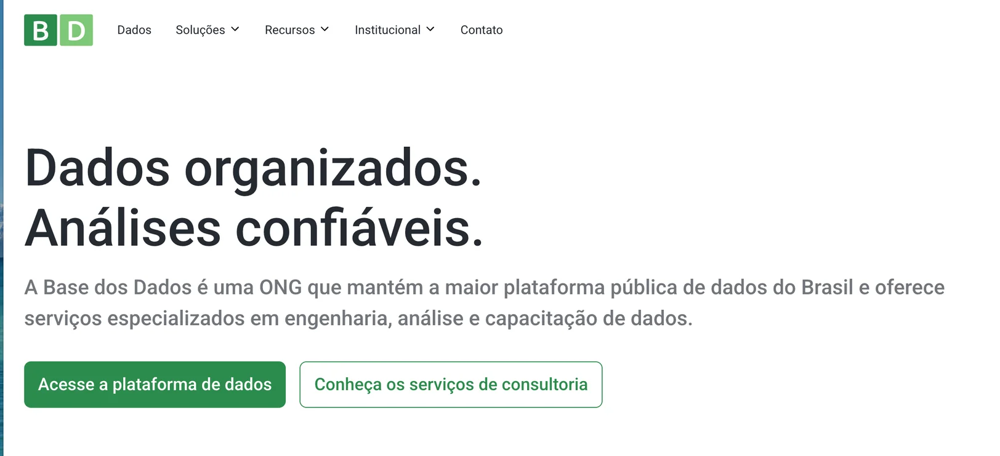
ABRIR BASE DOS DADOS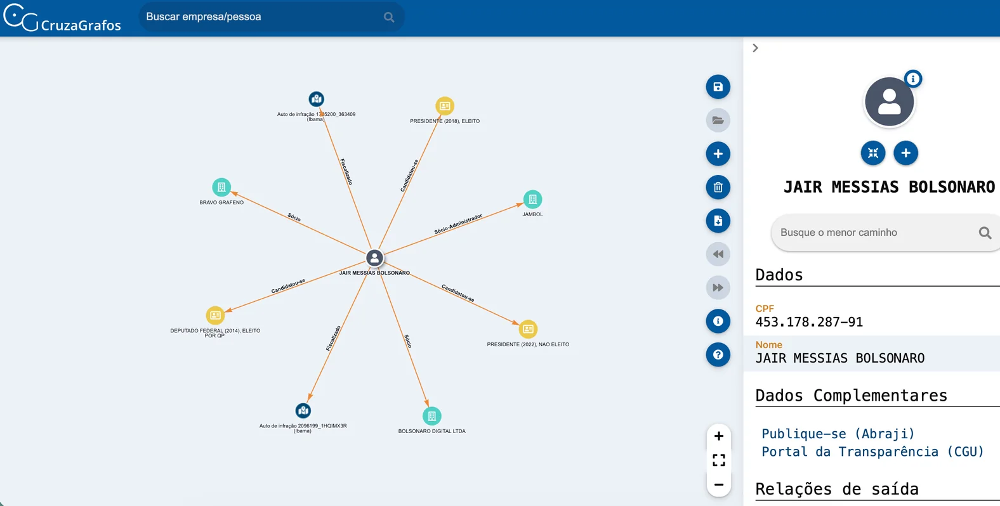
ABRIR CRUZAGRAFOS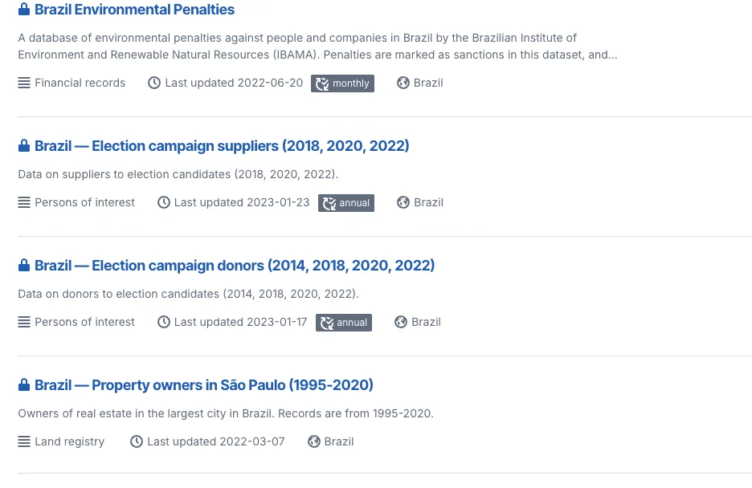
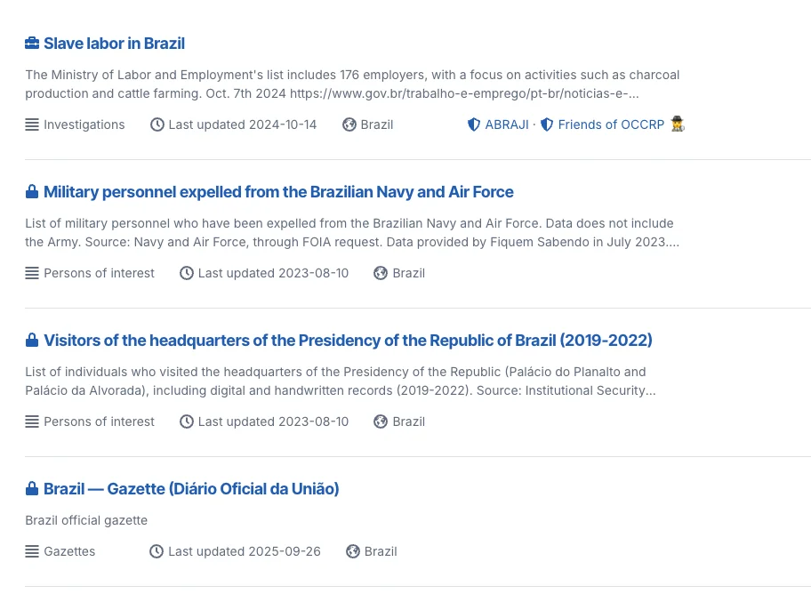
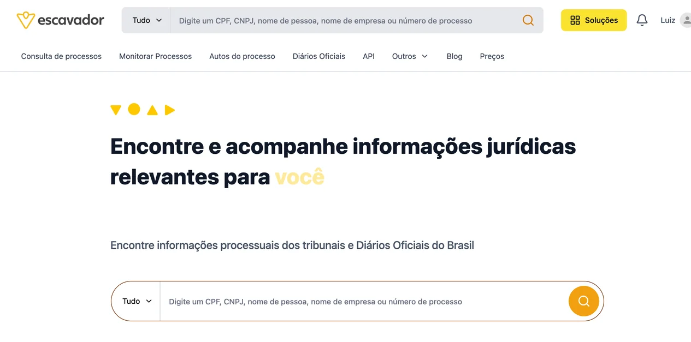
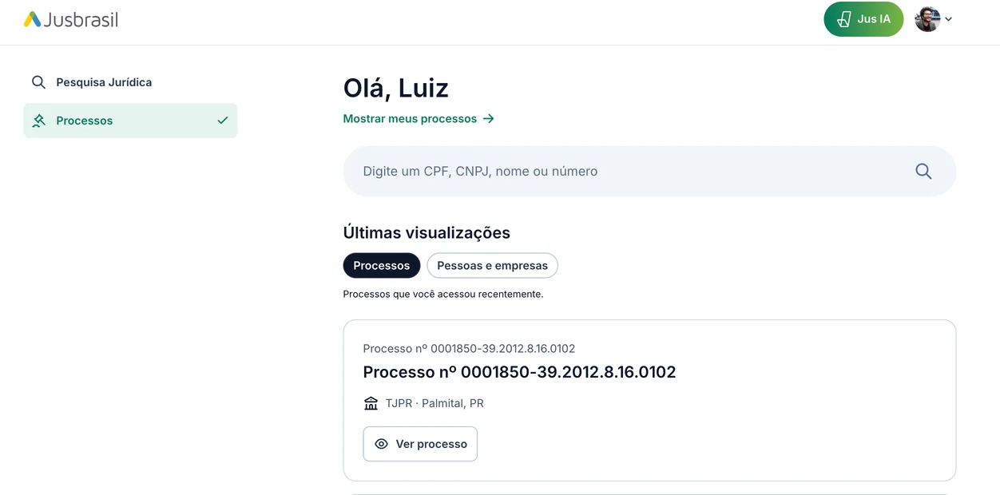
Excel ou Google Sheets resolvem grande parte das pautas de dados. O importante é saber filtrar, ordenar, limpar, cruzar e conferir.
Comece por uma pessoa, empresa, órgão, contrato, viagem ou pagamento. Depois siga os vínculos e baixe os dados.
ABRIR PORTALO Portal permite filtrar por pessoa, órgão, destino e período, além de baixar a base ou abrir visualizações. Uma boa pauta pode começar com uma pergunta simples: quem viajou mais, para onde e a que custo?
ABRIR CONSULTA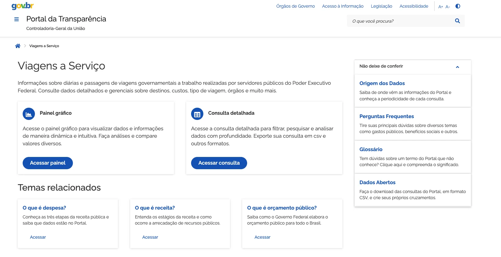
Como fazerA Folha analisou viagens de servidores registradas no Portal da Transparência entre 2014 e abril de 2025. A pauta compara governos e calcula quanto foi gasto em viagens em que o nome do servidor estava oculto.
Baixe os dados de viagens, filtre registros sigilosos, some passagens e diárias e compare a proporção de nomes ocultos por governo e por ano.
Em setembro de 2025, a Folha usou dados disponíveis no Portal da Transparência para levantar integrantes da delegação brasileira em Nova York e despesas com hospedagem e veículos.
Filtre viagens por período e destino, identifique viajantes ligados aos órgãos da comitiva e some despesas. Depois confira gastos que não aparecem no SCDP diretamente com os órgãos.
A BBC News Brasil comparou gastos dos cartões corporativos de Lula, Bolsonaro, Dilma e Temer usando registros da CGU. O caso mostra a importância de comparar séries históricas e conferir lacunas na base.
Baixe gastos por cartão de pagamento, agrupe por período presidencial, corrija valores pela inflação e identifique operações sem detalhamento antes de tirar conclusões.
O filtro do site ajuda a explorar. A planilha permite ordenar, somar, agrupar, comparar anos e cruzar com outras bases. Salve também a URL dos filtros usados para conseguir reproduzir a apuração.
A lei foi publicada.
Entrou em vigor.
Qualquer pessoa pode pedir informações públicas. A regra é acesso; sigilo é exceção.
Obter bases que o órgão possui, mas não disponibilizou.
Relatórios, notas técnicas, ofícios, pareceres e estudos.
Fiscalizações, registros fotográficos, arquivos antigos.
Entender como o governo mede, registra e produz determinado número.
União, estados e municípios.
Câmaras, assembleias e Congresso.
Tribunais, MPs, defensorias e cortes de contas.
Empresas controladas pelo governo e entidades privadas sem fins lucrativos, nos limites legais.
dias para resposta.
dias de prorrogação, se justificada.
dias para apresentar recurso após a resposta/negativa.
dias, em regra, para resposta a cada etapa recursal.
Informa.BR substituiu o antigo módulo de Acesso à Informação do Fala.BR. Desde 30 de junho de 2026, é o ponto único para buscar informações oficiais e registrar pedidos de LAI no Executivo federal.
ABRIR INFORMABROs estados mantêm canais próprios de SIC/e-SIC ou integram o pedido à ouvidoria estadual. Organizei uma planilha com os canais estaduais e a situação da checagem dos links.
PLANILHA DE e-SICsVocê não precisa explicar por que quer a informação. Seja claro sobre o que quer, qual período, qual recorte e em que formato.
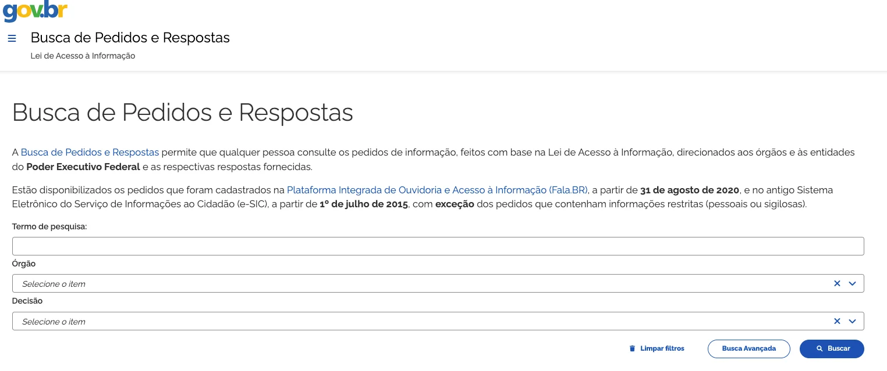
Pedidos anteriores podem revelar nomes de bases, sistemas, setores responsáveis e precedentes. Use isso para escrever um pedido melhor.
ABRIR BUSCA LAI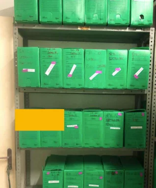
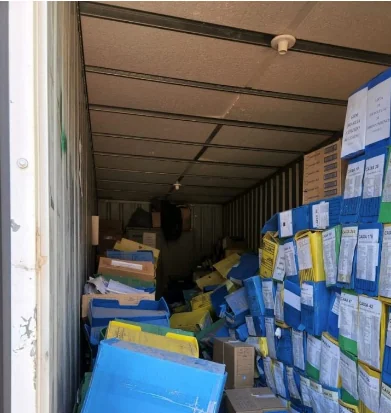
Fotos feitas por fiscais, registros de apreensão, imagens de vistoria.
Digitalizações, acervos históricos e documentos antigos.
Registros institucionais, quando existentes e não protegidos por sigilo legal.
Data, local, autoria e contexto do registro podem ser tão importantes quanto a imagem.
A estrutura exata varia conforme o ente e o órgão. Leia sempre as instruções do sistema.
Inclua o texto integral e o protocolo, se necessário.
Peça para separar o que foi respondido do que ficou faltando.
Solicite precedentes, artigos e argumentos que você possa conferir.
Remova exageros, confira as citações e deixe o recurso específico.
IA ajudou a organizar um recurso contra negativa do Ibama e a separar o argumento jurídico da pergunta factual.
Reescrever a pergunta, exigir fundamentação específica e apontar exatamente o item não respondido.
Pedir explicação da discrepância, base oficial, mudança metodológica e critérios de contagem.
Organizar uma reiteração contra barreira técnica e registrar formalmente a impossibilidade de recorrer.
“Seu pedido foi indeferido porque...”
selecionar textocopiar respostaabrir recursoChatGPT: extensões/integrações de navegador podem usar a página aberta como contexto, dependendo da sua conta e disponibilidade.
Gemini in Chrome: pode usar a aba atual como contexto em regiões/contas compatíveis.
Sempre revise a redação e confira a base legal antes de enviar.
O interesse jornalístico continua sendo seu.
Confira lei, decreto, precedente e prazo na fonte oficial.
Recorrer também é uma decisão de apuração e estratégia.